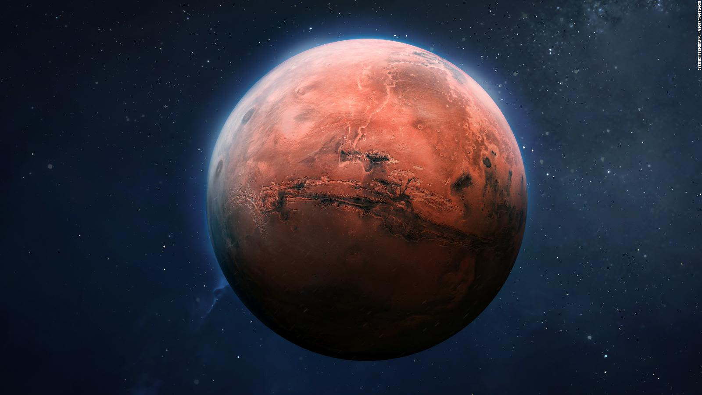

Marte

-
Descripción: Marte es el cuarto planeta del sistema solar y es conocido como el "planeta rojo" debido a su color característico.
-
Datos Principales:
-
Diámetro: 6,779 km
-
Distancia al Sol: 227.9 millones km
-
Período orbital: 687 días terrestres
-
Hechos Interesantes:
-
Marte tiene la montaña más alta del sistema solar, el Monte Olimpo, que es tres veces más alta que el Monte Everest.
-
Existen evidencias de que Marte tuvo agua en forma de ríos, lagos y océanos en el pasado.